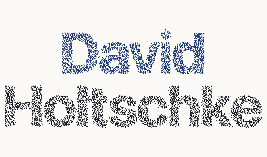
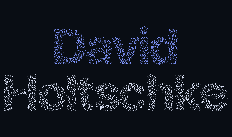
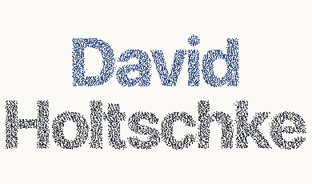
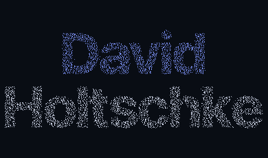
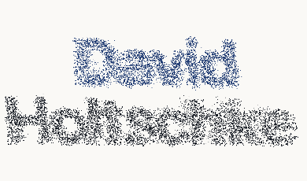
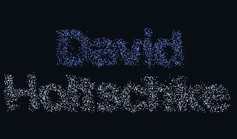
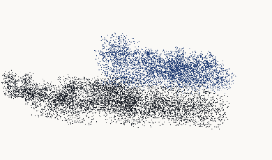
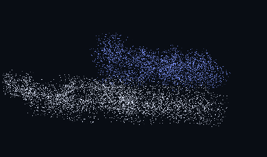
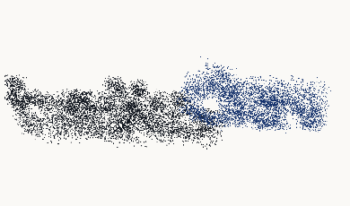
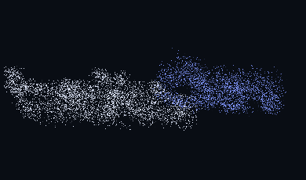

Original particle motion / 390px / reverse
Actual elapsed-time captures. Left: light with contrast changes. Right: unchanged original dark renderer.
light · 6501ms
original-dark · 6503ms
light · 8652ms
original-dark · 8652ms
light · 8951ms
original-dark · 8951ms
light · 9252ms
original-dark · 9251ms
light · 9552ms
original-dark · 9551ms
light · 9952msoriginal-dark · 9952mslight · 10503msoriginal-dark · 10502ms